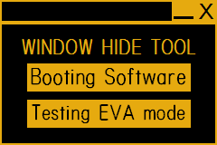

Monitored Target Object
Hide windows in an emergency
Download
What is This
This application hide every windows when you are in an emergency.
How to Use
- Download application from here.
- Run WindowHideTool.exe.
Screenshot

System Requirements
- Windows OS
- Fonts that are installed with Microsoft Office
Date of Publication
Ver.2.1 2013/08/21
Back